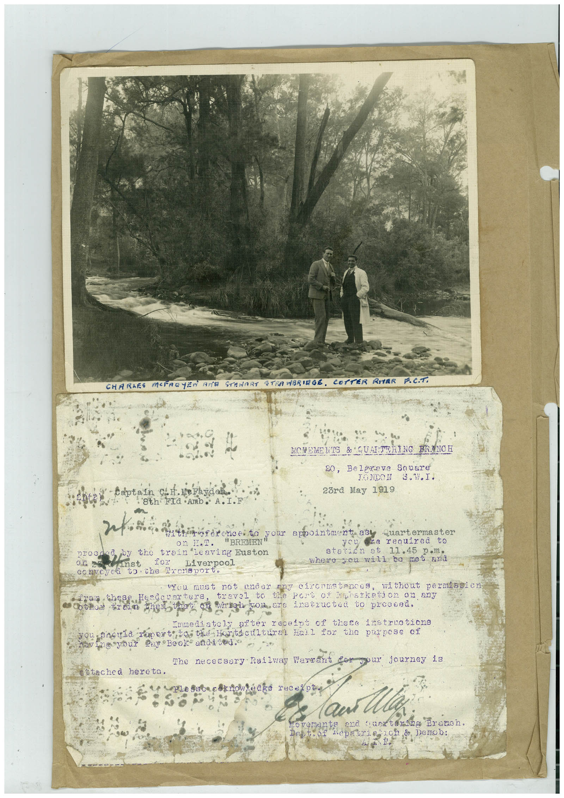

Book 1 · scan 049


Description
Transcription
Context
Review notes
Compare the machine draft with the scan. Handwriting and names need human review.
Artifacts
Edit the artifacts field in this note’s frontmatter to change these records. This summary is generated.
B01-S049-A01 — Photo, Letter & Handwritten note — Book 1, scan 049
Types: Photo, Letter, Handwritten note
Scope: Whole scanned page; individual items can be split out during review.
Caption: Not mapped yet.
Caption source: Not recorded yet.
Caption status: unmapped
Machine transcription
CHA RAES MOPACTER AMA STENART STRAWBRIRGE. cor ER RHER P.C.T. NOVEMENTS & QUATERING BRANCH 20, Belerove Snuare TONDON 8.W.I. 23rd May 1919 8th Fla Amb. A.I.F proctoy the train leaving Euston caveyda the Drensport Liver pool are renuired to statin et 11.45 where you will be met and You must not under apy circumstances, without permission frog these Hondarerters, travel to the Poru of pharkemon on any othon trein then that on higi you ene instructed to proceed. Immediatoly after receipt of theca instruotions on t to than Hat ture sat tor too purpose having your Pay Beok endied. The necesary Railway Warrant for gour journey is stached hereto. Dest. 01 ond tunetoring Branch.